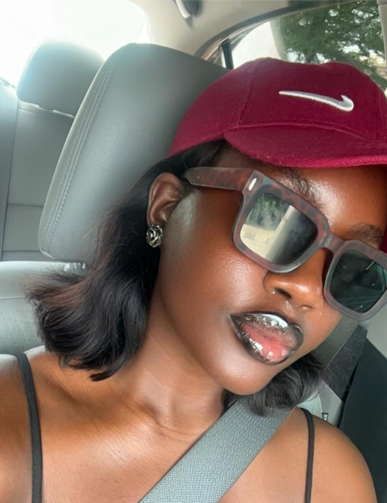

About Me
Welcome to My Profile
I'm Oyindamola Ibrahim, ALT/SOE/024/5808. I'm a student of Alt School Africa in the Cloud Engineering track and here's my assignment on creating HTMl files using media elements.
Profile Picture
Favorite Music
I love music. My favorite song at the moment is called May 10th by Serotonin.
Favorite Video
One of my all-time favorite videos is the intro from the movie Deadpool & Wolverine. I think it gives a pretty good glimpse into my personality